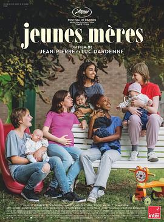

6.6
年轻母亲之家
Jeunes mères（Young Mothers）
2025
法国
评分 6.6
导演:
Jean-Pierre Dardenne / Luc Dardenne
演员:
Lucie Laruelle / Babette Verbeek / Elsa Houben / Janaïna Halloy Fokan / Samia Hilmi / Jef Jacobs / Günter Duret / Christelle Cornil / India Hair / Claire Bodson
类型:
剧情
剧情简介
故事发生在比利时一所“年轻母亲之家”，几位十几岁的女孩带着各自的婴儿被安置在这里。Jessica、Perla、Julie、Ariane 和 Naïma 表面上只是一起上课、一起吃饭、在狭小的院子里推着婴儿车兜圈，但镜头很快让人看到，每个人的肩上都背着远超年龄的重量——破碎的家庭、缺席的父亲、复杂的感情关系，以及对未来几乎为零的掌控感。Perla 外表强硬，说话尖刻，却在夜深人静时盯着手机屏幕等一条永远等不到的消息；Jessica 和母亲的关系紧绷，既渴望被抱紧，又害怕再一次被推开；Ariane 与酗酒的母亲反复拉扯，在愤怒和依赖之间来回摇摆；Julie 为了戒毒不得不与旧圈子彻底切断联系，每一次复诊、每一张化验单都像是在决定她能不能继续当母亲；Naïma 则拎着简陋的行李，一边拼命找临时工作，一边试着在这个临时的“家”里扎根。收容所的工作人员没有夸张的鸡汤，也没有救世主式的光环，她们更多是在走廊里陪着聊天、在会议室里反复解释制度，在一次次失败后仍然拉女孩们一把。影片用大量手持镜头跟随这些年轻母亲穿梭于楼道、公交车、福利机构与医院之间，吵闹的婴儿哭声、紧张的面谈、深夜的低声争吵交织在一起，让人几乎能闻到空气中混杂着消毒水和奶粉味的窒息感。没有宏大转折，也没有戏剧化的奇迹，《年轻母亲之家》更像是一部由无数细节拼成的日记：有人在失败中重新站起，也有人始终在边缘试探。达内兄弟用一贯克制的社会现实主义手法，既不美化困境，也不把女孩们拍成“问题样本”，而是把她们当作真正的主角——仍然青涩、常常犯错，却一次次在黑暗中为自己和孩子点亮一盏微弱但倔强的灯。